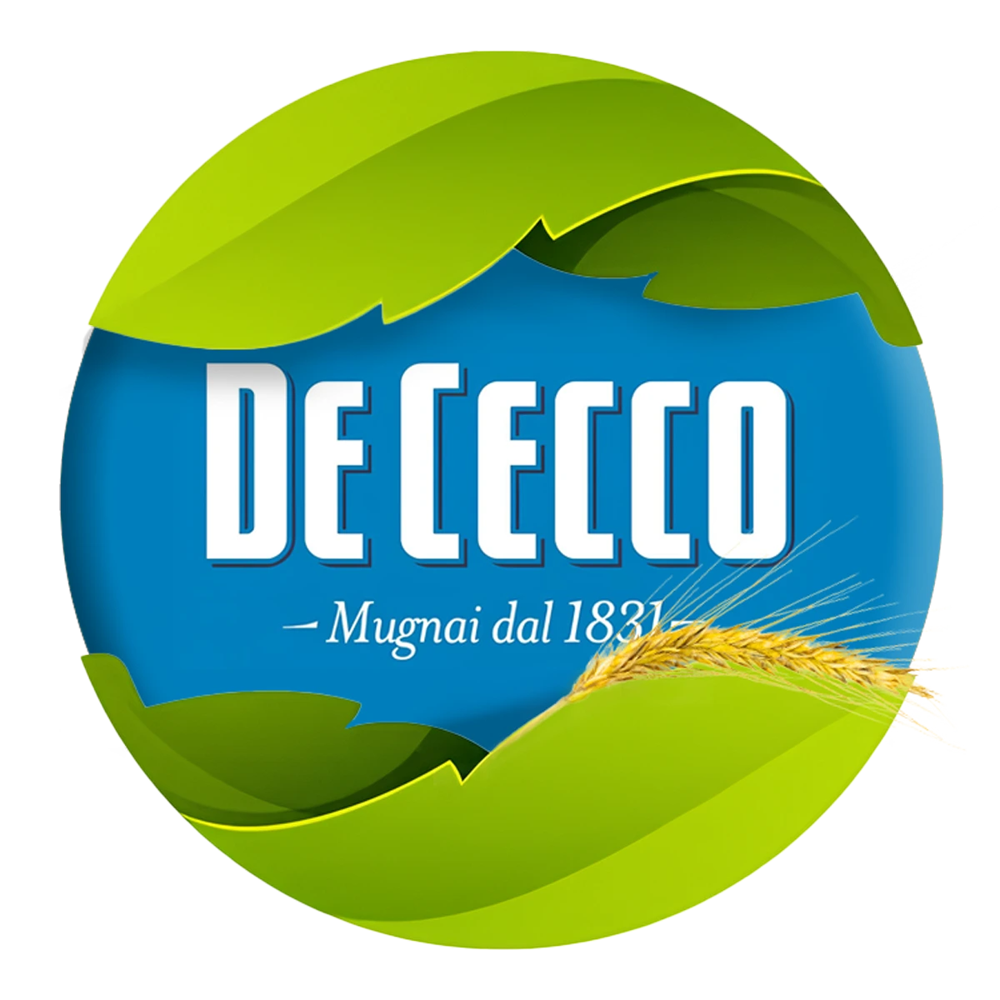

<header>
    <nav class="navbar navbar-expand-lg navbar-light bg-light fixed-top">  <!--fixed-top blocca il menu in alto -->
      <div class="container-fluid"> <!-- contenitore a larghezza piena -->
        <!-- logo cliccabile che riporta alla home -->
        <a class="navbar-brand" href="index.html"> 
          
        </a>
        <!-- hamburger menu per mobile  -->
        <button class="navbar-toggler" type="button" data-bs-toggle="collapse" data-bs-target="#headerNav" 
        aria-controls="headerNav" aria-expanded="false" aria-label="Toggle navigation">
        <!-- tutti gli attributi aria (Accesible Rich Internet Applications) sono stati inseriti per migliorare l'accessibilità -->  
          <span class="navbar-toggler-icon"></span> <!-- icona dell’hamburger menu generata automaticamente da Bootstrap -->
        </button>
        <div class="collapse navbar-collapse" id="headerNav"> <!-- contenitore del menu di navigazione, collassabile 
          su dispositivi piccoli -->
          <ul class="navbar-nav mx-auto"> <!-- elenco voci menu centrato orizzontalmente -->
            <li class="nav-item"><a class="nav-link" href="index.html">Chi Siamo</a></li>
            <li class="nav-item"><a class="nav-link" href="sostenibilita.html">Sostenibilità</a></li>
            <li class="nav-item"><a class="nav-link" href="faq.html">FAQ</a></li>
          </ul>
        </div>
      </div>
    </nav>
  </header>